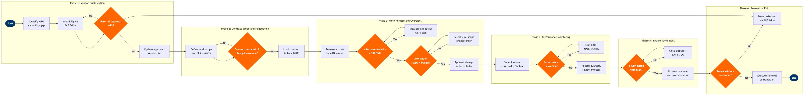

MRO Vendor & Outsourcing Management
Maintenance, Repair & Overhaul › MRO Vendor Management · 16 L4 steps · 6 phases · 7 decision gates · Updated 2026-03-19 19:26
📊
Process Flow Diagram (BPMN)

📋
L4 Process Steps
| Step | Step Name | Role / Swim Lane | System | Input | Output | KPI | Dec? | Exc? |
|---|---|---|---|---|---|---|---|---|
Phase 1 1.1 |
Identify MRO capability gap requiring outsourcing | Director of Engineering / MRO Strategy | AMOS by Swiss AviationSoftware | Maintenance program review, fleet capacity utilisation report | Outsourcing requirement specification with scope and timeline | Vendor qualification cycle ≤90 days from gap identification | N | N |
| 1.2 | Issue RFQ to approved vendor shortlist via Ariba | Procurement Specialist — MRO | SAP Ariba | Outsourcing requirement specification, current Approved Vendor List | RFQ package distributed to shortlisted MRO vendors | RFQ response rate ≥80% of invited vendors within 14 days | N | Y |
| 1.3 | Evaluate vendor Part-145 approval and capability | Quality Assurance Manager | AMOS by Swiss AviationSoftware (Vendor Management module) | Vendor qualification submissions, FAA/EASA Part-145 approval certificates | Approved Vendor List (AVL) update with capability ratings | 100% of selected vendors hold current EASA Part-145 or FAA Part-145 approval at time of contract award | Y | Y |
Phase 2 2.1 |
Define MRO work scope and SLA requirements | Technical Services Manager | AMOS by Swiss AviationSoftware | Aircraft maintenance program, fleet maintenance schedule, maintenance history | Maintenance work scope document, draft SLA with TAT and quality KPIs | Work scope completeness score ≥95% (no unplanned post-induction scope additions attributable to pre-induction planning gaps) | N | N |
| 2.2 | Negotiate contract terms, pricing, and TAT commitments | VP Technical Services / Commercial Manager | SAP Ariba (Contract Management) | Draft SLA, vendor commercial proposals, industry man-hour benchmarks | Signed MRO contract with TAT commitments, penalty clauses, and AWF pricing schedule | C-check contract TAT ≤35 days; man-hour rate within ±5% of OAG/industry benchmark | Y | N |
| 2.3 | Load signed contract into SAP Ariba and AMOS | Procurement Specialist — MRO | SAP Ariba + AMOS by Swiss AviationSoftware | Signed MRO contract, approved work scope | Active vendor contract record in both SAP Ariba and AMOS with linked work orders | Contract data entry accuracy 100%; dual-system load completed within 2 business days of signature | N | Y |
Phase 3 3.1 |
Release aircraft to MRO vendor for scheduled induction | Maintenance Controller | AMOS by Swiss AviationSoftware | Signed maintenance work order, aircraft airworthiness release, ferry flight plan | Aircraft handover documentation, work package issued to vendor | On-time aircraft delivery to MRO station ≥95%; handover documentation completeness 100% | N | Y |
| 3.2 | Monitor in-shop progress against TAT milestones | Resident Technical Representative | AMOS by Swiss AviationSoftware (Work Order tracking) | Work package milestones, daily shop visit reports from vendor | Daily progress reports, milestone deviation flags in AMOS | Milestone adherence ≥90%; TAT variance ≤±10% of contracted schedule at mid-check review | Y | Y |
| 3.3 | Approve additional work findings (AWF) change orders | Technical Services Manager | AMOS by Swiss AviationSoftware + SAP Ariba (Change Order) | Vendor non-routine finding report, structural inspection results, AD/SB compliance requirement | Approved change order, updated work scope and cost estimate | AWF approval turnaround ≤4 hours to avoid vendor shop-floor downtime | Y | Y |
Phase 4 4.1 |
Collect vendor scorecard data after work completion | Quality Engineer | AMOS by Swiss AviationSoftware + Tableau / Power BI | Completed work orders, TAT records, defect escapes, rework events, invoice data | Vendor performance scorecard with TAT, quality, and cost dimensions | On-time delivery ≥92%; rework rate ≤2%; defect escape rate (post-C-of-R finding) ≤0.5% | N | N |
| 4.2 | Conduct formal quarterly vendor performance review | Director of Engineering / MRO Strategy | Tableau / Power BI (dashboards from AWS Redshift) | Vendor performance scorecard, SLA benchmarks, prior-quarter action items | Performance review minutes, corrective action plan if SLA threshold breached | Quarterly performance reviews completed 100% on schedule; SLA compliance rating reported within ±5% confidence interval | Y | Y |
| 4.3 | Issue corrective action request (CAR) for SLA breach | Quality Assurance Manager | AMOS by Swiss AviationSoftware (Quality module) | Failed performance review record, documented defect or delay pattern | Formal CAR with 30-day vendor response requirement, root cause analysis template | CAR vendor response rate 100% within 30 days; repeat findings reduced ≥50% within two subsequent work packages | N | Y |
Phase 5 5.1 |
Review and validate MRO vendor invoices (3-way match) | Accounts Payable Analyst — Technical | SAP S/4HANA Finance (FI/CO) + AMOS by Swiss AviationSoftware | Vendor invoice, completed AMOS work order, SAP Ariba PO, approved change orders | Invoice approval or dispute flag with line-item variance detail | 3-way match success rate ≥98%; invoice dispute resolution ≤15 business days | Y | Y |
| 5.2 | Process vendor payment and post maintenance cost allocation | Finance Controller — MRO | SAP S/4HANA Finance (FI/CO) | Approved invoice, aircraft registration / cost centre mapping | Payment instruction, maintenance cost posted to aircraft-level cost centre | Payment within contracted net-30 terms ≥95%; cost allocation accuracy 100% at aircraft registration level | N | Y |
Phase 6 6.1 |
Evaluate contract renewal vs. re-tender decision | VP Technical Services | Tableau / Power BI + SAP Ariba | Aggregated vendor scorecard (12-month), market pricing benchmarks, contract expiry calendar | Renewal recommendation or re-tender decision brief for leadership sign-off | Renewal or re-tender decision completed ≥90 days before contract expiry; benchmark pricing variance ≤8% from renewed rate | Y | N |
| 6.2 | Execute contract close-out or new-vendor transition | Technical Services Manager + Procurement Specialist — MRO | AMOS by Swiss AviationSoftware + SAP Ariba | Renewal or re-tender decision, new vendor qualification record (if transitioning) | Closed-out contract record, active new vendor contract, knowledge transfer documentation | Vendor transition completed with zero AOG events attributable to transition gap; transition plan signed off ≥60 days before go-live | N | Y |
📋